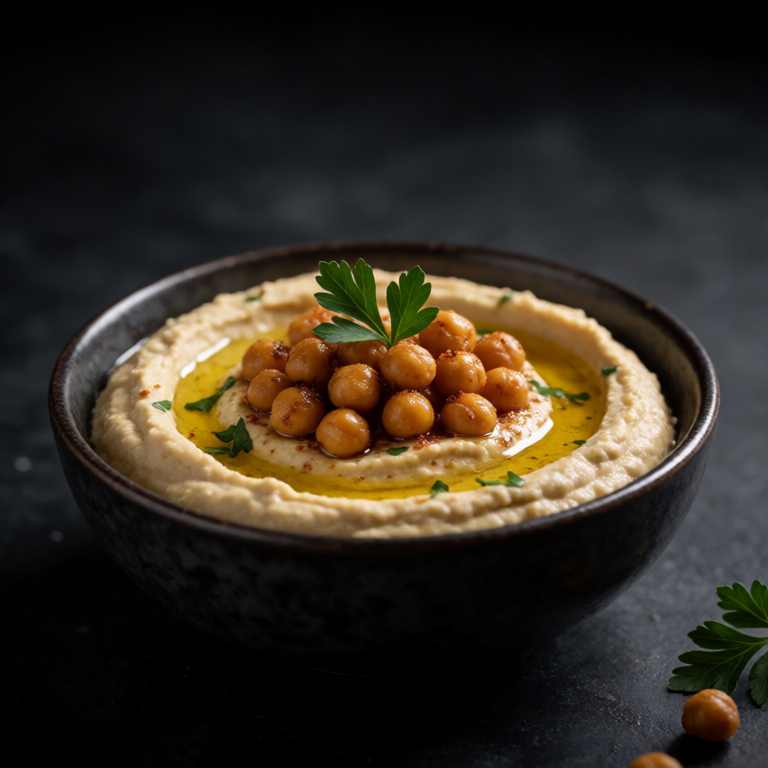

Creamy cottage cheese, ripe peaches, and hot honey make a sweet, spicy bowl with plenty of contrast.
Build the bowl in layers instead of stirring everything into one texture. A seasoned base, a substantial topping, and something bright or crunchy make each bite a little different.
At a Glance
Prep
3m
Cook
0m
Serves
1
Difficulty
Easy
Ingredients
Method
- 01
Assemble
Scoop the cottage cheese into a bowl. Arrange the sliced peaches on top. Drizzle generously with hot honey and sprinkle with flaky salt and almonds.
Slop Notes
The combination of sweet peaches, spicy honey, and creamy cheese is unexpectedly perfect.
Recipe by foidslop · How we create our recipes
Keep eating
Related recipes
